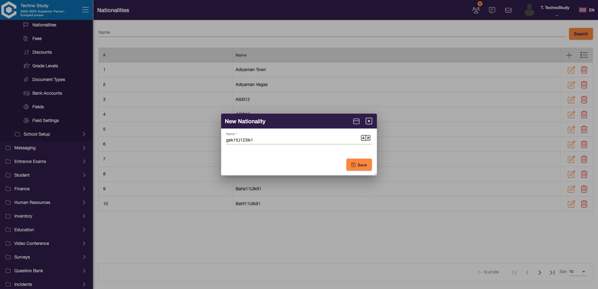

-
Login Functionality
10:32:28 PM / 00:00:11:204 Fail
Login Functionality
03.30.2023 10:32:28 PM 03.30.2023 10:32:39 PM 00:00:11:204 · #test-id=1FailLogin with valid username and passwordGiven Navigate to CampusWhen Enter username and password and click login buttonStep skippedThen User should login succesfullyStep skippedStepDefinitions.Hooks.after(io.cucumber.java.Scenario) -
Login Functionality
10:32:28 PM / 00:00:30:158 Pass
Login Functionality
03.30.2023 10:32:28 PM 03.30.2023 10:32:58 PM 00:00:30:158 · #test-id=2PassLogin with valid username and passwordGiven Navigate to CampusWhen Enter username and password and click login buttonThen User should login succesfully -
DataTable Functionality
10:32:39 PM / 00:01:31:513 Fail
DataTable Functionality
03.30.2023 10:32:39 PM 03.30.2023 10:34:11 PM 00:01:31:513 · #test-id=11FailCreate NationalityGiven Navigate to CampusWhen Enter username and password and click login buttonStep skippedThen User should login succesfullyStep skippedAnd Click on the element in LeftNavsetup parameters nationalities Step skippedAnd Click on the element in DialogaddButton Step skippedAnd User sending the keys in Dialog ContentnameInput gek1tU123lk1 Step skippedAnd Click on the element in DialogsaveButton Step skippedThen Success message should be displayedStep skippedAnd User delete item from Dialog Contentgek1tU123lk1 Step skippedThen Success message should be displayedStep skippedStepDefinitions.Hooks.after(io.cucumber.java.Scenario)FailCreate NationalityGiven Navigate to CampusWhen Enter username and password and click login buttonThen User should login succesfullyAnd Click on the element in LeftNavsetup parameters nationalities And Click on the element in DialogaddButton And User sending the keys in Dialog ContentnameInput gek1tU123lk1 And Click on the element in DialogsaveButton Then Success message should be displayedAnd User delete item from Dialog Contentgek1tU123lk1 Step skippedThen Success message should be displayedStep skippedStepDefinitions.Hooks.after(io.cucumber.java.Scenario)screenshot nameFailFee FunctionalityGiven Navigate to CampusWhen Enter username and password and click login buttonStep skippedThen User should login succesfullyStep skippedAnd Click on the element in LeftNavsetup parameters fees Step skippedAnd Click on the element in DialogaddButton Step skippedAnd User sending the keys in Dialog ContentnameInput gek1tFee5 codeInput ge43k4 integrationCode 987 priorityCode 906 Step skippedAnd Click on the element in DialogtoggleBar saveButton Step skippedThen Success message should be displayedStep skippedAnd User delete item from Dialog Contentgek1tFee5 Step skippedThen Success message should be displayedStep skippedStepDefinitions.Hooks.after(io.cucumber.java.Scenario)PassFee FunctionalityGiven Navigate to CampusWhen Enter username and password and click login buttonThen User should login succesfullyAnd Click on the element in LeftNavsetup parameters fees And Click on the element in DialogaddButton And User sending the keys in Dialog ContentnameInput gek1tFee5 codeInput ge43k4 integrationCode 987 priorityCode 906 And Click on the element in DialogtoggleBar saveButton Then Success message should be displayedAnd User delete item from Dialog Contentgek1tFee5 Then Success message should be displayed
-
org.openqa.selenium.SessionNotCreatedException
3 tests
org.openqa.selenium.SessionNotCreatedException
3 failedStatus Timestamp TestName Fail 22:32:29 PM StepDefinitions.Hooks.after(io.cucumber.java.Scenario) Login Functionality.Login with valid username and password.StepDefinitions.Hooks.after(io.cucumber.java.Scenario)Fail 22:32:49 PM StepDefinitions.Hooks.after(io.cucumber.java.Scenario) DataTable Functionality.Create Nationality.StepDefinitions.Hooks.after(io.cucumber.java.Scenario)Fail 22:33:10 PM StepDefinitions.Hooks.after(io.cucumber.java.Scenario) DataTable Functionality.Fee Functionality.StepDefinitions.Hooks.after(io.cucumber.java.Scenario) -
org.openqa.selenium.TimeoutException
1 tests
org.openqa.selenium.TimeoutException
1 failedStatus Timestamp TestName Fail 22:33:25 PM Then Success message should be displayed DataTable Functionality.Create Nationality.Then Success message should be displayed -
io.cucumber.core.exception.CucumberException
3 tests
io.cucumber.core.exception.CucumberException
3 failedStatus Timestamp TestName Fail 22:32:28 PM Given Navigate to Campus Login Functionality.Login with valid username and password.Given Navigate to CampusFail 22:32:39 PM Given Navigate to Campus DataTable Functionality.Create Nationality.Given Navigate to CampusFail 22:33:00 PM Given Navigate to Campus DataTable Functionality.Fee Functionality.Given Navigate to Campus
-
@Regression
6 tests
@Regression
2 passed 4 failedStatus Timestamp TestName Fail 22:32:28 PM Login with valid username and password Login Functionality.Login with valid username and passwordPass 22:32:28 PM Login with valid username and password Login Functionality.Login with valid username and passwordFail 22:32:39 PM Create Nationality DataTable Functionality.Create NationalityFail 22:32:58 PM Create Nationality DataTable Functionality.Create NationalityFail 22:33:00 PM Fee Functionality DataTable Functionality.Fee FunctionalityPass 22:33:35 PM Fee Functionality DataTable Functionality.Fee Functionality -
@SmokeTest
2 tests
@SmokeTest
1 passed 1 failedStatus Timestamp TestName Fail 22:32:28 PM Login with valid username and password Login Functionality.Login with valid username and passwordPass 22:32:28 PM Login with valid username and password Login Functionality.Login with valid username and password
Started
Mar 30, 2023 10:32:27 PM
Ended
Mar 30, 2023 10:34:11 PM
Features Passed
1
Features Failed
2
Features
Scenarios
Steps
Timeline
Tags
| Name | Passed | Failed | Skipped | Others | Passed % |
|---|---|---|---|---|---|
| @Regression | 2 | 4 | 0 | 0 | 33.333% |
| @SmokeTest | 1 | 1 | 0 | 0 | 50% |